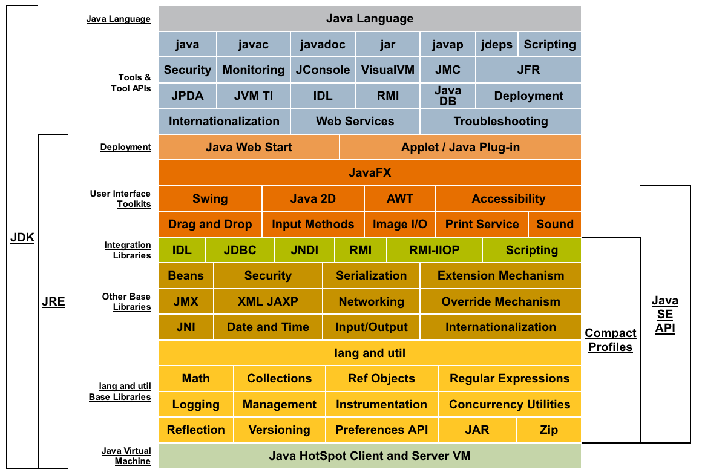

Java 编程语言精粹
1 开发工具
1.1 JDK 的安装和环境变量配置
JDK 可以直接在 Oracle 网站上下载，链接是 JDK 1.8 Download ，将 JDK 直接解压放
到一个文件夹里就可以使用 JDK，Java 一般会配置 JAVA_HOME 环境变量，
JAVA_HOME 环境变量是指向 Java 的安装文件夹，具体配置如下所示
mkdir -p /usr/local/java && cd /usr/local/java
tar xzvf jdk-8u231-linux-x64.tar.gz
配置环境变量如下
export JAVA_HOME='/usr/local/java/jdk1.8.0_231' export PATH=$JAVA_HOME/bin:$PATH
1.2 编译器 javac 和虚拟机 java
Java 的两个基本工具是 javac 和 java, 其中这两个工具功能如下：
- javac 是 Java 的编译器，将 Java 的源代码编译成虚拟机识别的字节码
- java 是 Java 的执行器，可以执行 Java 编译器编译好的字节码
下面是查看工具版本的方法
$ java -version java version "1.8.0_221" Java(TM) SE Runtime Environment (build 1.8.0_221-b11) Java HotSpot(TM) 64-Bit Server VM (build 25.221-b11, mixed mode) $ javac -version javac 1.8.0_221
也可以使用 javac 和 java 一个编译并执行 Java 代码
$ ls
Hello.java
$ cat Hello.java
public class Hello {
public static void main(String args[]) {
System.out.println("hello");
}
}
$ javac Hello.java
$ ls
Hello.class Hello.java
$ java Hello
hello
$
1.3 TODO 调试器 jdb
Java 自带的调试器是 jdb 命令，通常可以使用集成开发环境（IDE）中的调试工具来
调试 Java，所以 jdb 一般使用的比较少
1.4 解释器 jrepl
Java 9 的 JDK 中就自带解释器, 可以用于调试一些常见的命令。Java 8 用户可以使用
一个民间开发的 REPL，就叫 java-repl, 该工具可以在 github 中下载 jar 包，然
后直接执行
java -jar $JAVA_HOME/lib/javarepl-dev.jar
我一般直接建一个别名，这样运行 java 的解释器效果如下
$ jrepl [INFO] Unable to bind key for unsupported operation: edit-and-execute-command Welcome to JavaREPL version dev (Java HotSpot(TM) 64-Bit Server VM, Java 1.8.0_231) Type expression to evaluate, :help for more options or press tab to auto-complete. Connected to local instance at http://localhost:40173 java> "hello world" java.lang.String res0 = "hello world" java>
1.5 反汇编器 javap
javap 时 JDK 自带的反汇编器，可以反汇编 java 的类
class Apple { public int add(int a, int b) { return a + b; } public static void main(String args[]) { System.out.println("Hello World"); } }
使用 javap 的反汇编的示例如下
$ javap Apple
Compiled from "Apple.java"
class Apple {
Apple();
public int add(int, int);
public static void main(java.lang.String[]);
}
$ javap -c Apple
Compiled from "Apple.java"
class Apple {
Apple();
Code:
0: aload_0
1: invokespecial #1 // Method java/lang/Object."<init>":()V
4: return
public int add(int, int);
Code:
0: iload_1
1: iload_2
2: iadd
3: ireturn
public static void main(java.lang.String[]);
Code:
0: getstatic #2 // Field java/lang/System.out:Ljava/io/PrintStream;
3: ldc #3 // String Hello World
5: invokevirtual #4 // Method java/io/PrintStream.println:(Ljava/lang/String;)V
8: return
}
$ javap -v Apple
Classfile /tmp/java/Apple.class
Last modified Mar 17, 2020; size 471 bytes
MD5 checksum ad20aeca420725caad4423644222e82d
Compiled from "Apple.java"
class Apple
minor version: 0
major version: 52
flags: ACC_SUPER
Constant pool:
#1 = Methodref #6.#17 // java/lang/Object."<init>":()V
#2 = Fieldref #18.#19 // java/lang/System.out:Ljava/io/PrintStream;
#3 = String #20 // Hello World
#4 = Methodref #21.#22 // java/io/PrintStream.println:(Ljava/lang/String;)V
#5 = Class #23 // Apple
#6 = Class #24 // java/lang/Object
#7 = Utf8 <init>
#8 = Utf8 ()V
#9 = Utf8 Code
#10 = Utf8 LineNumberTable
#11 = Utf8 add
#12 = Utf8 (II)I
#13 = Utf8 main
#14 = Utf8 ([Ljava/lang/String;)V
#15 = Utf8 SourceFile
#16 = Utf8 Apple.java
#17 = NameAndType #7:#8 // "<init>":()V
#18 = Class #25 // java/lang/System
#19 = NameAndType #26:#27 // out:Ljava/io/PrintStream;
#20 = Utf8 Hello World
#21 = Class #28 // java/io/PrintStream
#22 = NameAndType #29:#30 // println:(Ljava/lang/String;)V
#23 = Utf8 Apple
#24 = Utf8 java/lang/Object
#25 = Utf8 java/lang/System
#26 = Utf8 out
#27 = Utf8 Ljava/io/PrintStream;
#28 = Utf8 java/io/PrintStream
#29 = Utf8 println
#30 = Utf8 (Ljava/lang/String;)V
{
Apple();
descriptor: ()V
flags:
Code:
stack=1, locals=1, args_size=1
0: aload_0
1: invokespecial #1 // Method java/lang/Object."<init>":()V
4: return
LineNumberTable:
line 1: 0
public int add(int, int);
descriptor: (II)I
flags: ACC_PUBLIC
Code:
stack=2, locals=3, args_size=3
0: iload_1
1: iload_2
2: iadd
3: ireturn
LineNumberTable:
line 4: 0
public static void main(java.lang.String[]);
descriptor: ([Ljava/lang/String;)V
flags: ACC_PUBLIC, ACC_STATIC
Code:
stack=2, locals=1, args_size=1
0: getstatic #2 // Field java/lang/System.out:Ljava/io/PrintStream;
3: ldc #3 // String Hello World
5: invokevirtual #4 // Method java/io/PrintStream.println:(Ljava/lang/String;)V
8: return
LineNumberTable:
line 8: 0
line 9: 8
}
SourceFile: "Apple.java"
2 基本用法
2.1 基本类型
Java 语言中有 8 个基本类型，和 C++语言不同的是 Java 的基本类型的存储空间是固 定的，每种类型的信息如下
| 类型 | 存储空间 | 封装类 | 说明 |
|---|---|---|---|
| boolean | 1 bit | Boolean | |
| byte | 1 字节 | Byte | |
| char | 2 字节 | Character | Unicode 编码 |
| short | 2 字节 | Short | |
| int | 4 字节 | Integer | |
| long | 8 字节 | Long | |
| float | 4 字节 | Float | |
| double | 8 字节 | Double |
数值基本类型可以存在如下的自动转换（红色虚线表示损失精度，蓝色实线表示不损失精度）：

基本类型和封装类的区别
- 传值方式不同，基本数据类型（原始数据类型）是值传递，封装类型是引用传递
- 封装类有方法和属性，可以利用这些方法和属性来处理数据，例如
Integer.parseInt(String str);基本数据类型都是 final 修饰的，不能被继承和 扩展新的类、方法 - 默认值不同，如
int i;默认值为 0，而Integer j;默认值为null, 因为此 时j为对象，对象默认值为null - 存储位置不同, 定义的基本数据类型的变量和对象的引用变量（地址）存储在栈中， 而实际对应的对象（value）是存储在堆中
2.2 String
2.2.1 字符串基本操作
String 在 Java 中不是基本类型，对应的有一个 String 类
java> String str1 = "";
java.lang.String str1 = ""
java> str1.isEmpty();
java.lang.Boolean res1 = true
java> str1.substring(0,3);
java.lang.StringIndexOutOfBoundsException: String index out of range: 3
java> String str2 = "Hello"
java.lang.String str2 = "Hello"
java> str2.substring(0,3)
java.lang.String res3 = "Hel"
java> str2.substring(1,3)
java.lang.String res4 = "el"
java> str2.substring(1,3) == "el"
java.lang.Boolean res5 = false
java> str2.substring(1,3).equals("el")
java.lang.Boolean res6 = true
java>
在判断字符串 str 为非空时需要写如下的两个条件
if (str != null && !str.isEmpty()) { // if str is not empty }
2.2.2 String 的不可变性
不可变对象指的是 一个对象，在它创建完成之后，不能再改变它的状态 。不能改变 状态的意思是，不能改变对象内的成员变量，包括基本数据类型的值不能改变，引用类 型的变量不能指向其他的对象，引用类型指向的对象的状态也不能改变。 如何创建不 可变类
至于为什么要把 String 类设计成不可变类，是它的用途决定的。其实不只 String， 很多 Java 标准类库中的类都是不可变的。在开发一个系统的时候，我们有时候也需要 设计不可变类，来传递一组相关的值，这也是面向对象思想的体现。不可变类有一些优 点，比如因为它的对象是只读的，所以多线程并发访问也不会有任何问题。当然也有一 些缺点，比如每个不同的状态都要一个对象来代表，可能会造成性能上的问题。所以 Java 标准类库还提供了一个可变版本，即 StringBuffer。
javac 编译可以对字符串常量直接相加的表达式进行优化，不必要等到运行期去进行
加法运算处理，而是在编译时去掉其中的加号，直接将其编译成一个这些常量相连的结
果。所以 String s = "a" + "b" + "c" + "d"; 只生成一个对象.
2.2.3 String, StringBuilder 和 StringBuffer
Java 平台提供了两种类型的字符串：String 和 StringBuffer / StringBuilder，它们 可以储存和操作字符串。其中 String 是只读字符串，也就意味着 String 引用的字符 串内容是不能被改变的。
而 StringBuffer 和 StringBuilder 类表示的字符串对象可以直接进行修改。
StringBuilder 是 JDK 1.5 中引入的，它和 StringBuffer 的方法完全相同，区别在
于它是在单线程环境下使用的，因为它的所有方面都没有被 synchronized 修饰，因
此它的效率也比 StringBuffer 略高。
2.3 输入和输出
读取数据的输入和打印到标准输出
Scanner in = new Scanner(System.in); System.out.println("What is your name?"); String name = in.nextLine();
格式化输出浮点数
java> double x = 100000.0 / 3.0;
double x = 33333.333333333336
java> System.out.printf("%.3f", x)
33333.333
java> System.out.printf("%,.3f", x)
33,333.333
2.4 数组的操作
不知道为什么，总是记不住 Java 的数组定义方式，这里记一下 Java 中数组定义方式
class App73 { public static void main(String args[]) { // int array int[] arr = new int[10]; // => elements are initialezd to 0 System.out.println(arr[3]); System.out.println(arr.length); // String array String[] sarr = new String[3]; sarr[0] = "Hello"; sarr[1] = "Man"; sarr[2] = "Welcome to Java world"; for (String w: sarr) { System.out.println(w); } } }
初始化数组的数据
class App341 { public static void main(String args[]) { int[] primes = {2, 3, 5, 7}; int[] primes = new int[] {2, 3, 5, 7}; int[][] magicSquare = { {1, 2, 3, 4}, {1, 0, 3, 9}, {1, 0, 3, 9}, {1, 0, 3, 9} }; } }
Java 数组默认时引用，如果需要复制可以调用 Arrays.copyOf(...) 方法
java> x = new int[] {1,2,3}
int[] x = [1, 2, 3]
java> y = new int[] {1,2,3}
int[] y = [1, 2, 3]
java> z1 = x
int[] z1 = [1, 2, 3]
java> y.length
java.lang.Integer res24 = 3
java> z2 = Arrays.copyOf(y, y.length)
int[] z2 = [1, 2, 3]
java> z1[0] = 9
java.lang.Integer res25 = 9
java> z2[0] = 9
java.lang.Integer res26 = 9
java> x
int[] x = [9, 2, 3]
java> y
int[] y = [1, 2, 3]
java>
排序数组
java> x int[] x = [9, 2, 3] java> Arrays.sort(x) java> x int[] x = [2, 3, 9]
2.5 静态变量和实例变量
- 在语法定义上的区别：静态变量前要加
static关键字，而实例变量前则不加。 - 在程序运行时的区别：实例变量属于某个对象的属性，必须创建了实例对象，其中的 实例变量才会被分配空间，才能使用这个实例变量。静态变量不属于某个实例对象， 而是属于类，所以也称为类变量，只要程序加载了类的字节码，不用创建任何实例对 象，静态变量就会被分配空间，静态变量就可以被使用了。总之，实例变量必须创建 对象后才可以通过这个对象来使用，静态变量则可以直接使用类名来引用。
静态变量在 Java 中是属于类的，它在所有的实例中的值是一样的。当类被 Java 虚拟 机载入的时候，会对静态变量进行初始化。如果你的代码尝试不用实例来访问非静态的 变量，编译器会报错，因为这些变量还没有被创建出来，还没有跟任何实例关联上。
2.6 final 关键字
- 修饰类：表示该类不能被继承
- 修饰方法：表示方法不能被覆盖
- 修饰变量：表示变量只能一次赋值以后值不能被修改（常量）
2.7 equals 与 == 的区别
== 是一个运算符。 equals 则是 String 对象的方法，可以.（点）出来。 我们比较
无非就是这两种:
- 基本数据类型比较
==比较两个值是否相等。相等为 true 否则为 false；equals 不能直接用于基本类型的比较。需要将基本类型转换为包装器进行比较。 - 引用对象比较
==和 equals 都是比较栈内存中的地址是否相等 。相等为 true 否则为 false。 需注意几点：- String 是一个特殊的引用类型。对于两个字符串的比较，不管是
==和 equals 这两者比较的都是字符串是否相同 - 当你创建两个 String 对象时，内存中的地址是不相同的，你可以赋相同的值。所 以字符串的内容相同。引用地址不一定相同，（相同内容的对象地址不一定相同）， 但反过来却是肯定的
- 基本数据类型比较 (String 除外)
==和 equals 两者都是比较值
- String 是一个特殊的引用类型。对于两个字符串的比较，不管是
class App198 { public static void main(String args[]) { String s1 = "Hello"; String s2 = "Hello"; String s3 = new String("Hello"); String s4 = "Hel" + "lo"; // String is immutable, it will compiles to "Hello" System.out.println(s1 == s2); // => true System.out.println(s1.equals(s2)); // => ture System.out.println(s1 == s3); // => false System.out.println(s1.equals(s3)); // => ture System.out.println(s1 == s4); // => true System.out.println(s1.equals(s4)); // => true } }
2.8 序列化
序列化就是一种用来处理对象流的机制，所谓对象流也就是将对象的内容进行流化。可 以对流化后的对象进行读写操作，也可将流化后的对象传输于网络之间。序列化是为了 解决在对对象流进行读写操作时所引发的问题。
序列化的实现：将需要被序列化的类实现 Serializable 接口，该接口没有需要实现
的方法， implements Serializable 只是为了标注该对象是可被序列化的，然后使用
一个输出流 (如：FileOutputStream) 来构造一个 ObjectOutputStream(对象流) 对象，
接着，使用 ObjectOutputStream 对象的 writeObject(Object obj) 方法就可以将参
数为 obj 的对象写出(即保存其状态)，要恢复的话则用输入流。
2.9 错误和异常
java.lang.Error: Throwable 的子类，用于标记严重错误，表示系统级的错误和 程序不必处理的异常。合理的应用程序不应该去try/catch这种错误。是恢复不是 不可能但很困难的情况下的一种严重问题；比如内存溢出，不可能指望程序能处理这 样的情况；java.lang.Exception: Throwable 的子类，表示需要捕捉或者需要程序进行处理 的异常，是一种设计或实现问题；也就是说，它表示如果程序运行正常，从不会发生 的情况。并且鼓励用户程序去catch它。
处理异常的一种方式是在类方法的定义中 throws 相应的异常
class App148 { public static void main(String args[]) throws MyException { MyException myecpt = new MyException("Ops!"); throw myexcpt; // System.out.println("Dead code"); } } class MyException extends IOException { MyException(String message) { super(message); } }
或者使用 try/catch 块来捕获异常进行处理
class App166 { public static void main(String args[]) { int num1, num2; try { num1 = 0; num2 = 62 / num1; System.out.println(num2); System.out.println("Hey I'm at the end of try block"); } catch (ArithmeticException e) { System.out.println("You should not divide a number by zero"); } catch (Exception e) { System.out.println("Exception occurred"); } System.out.println("I'm out of try-catch block in Java."); } }
Error 和 RuntimeException 及其子类都是未检查的异常 （unchecked exceptions）， 而所有其他的 Exception 类都是检查了的异常（checked exceptions）
- checked exceptions: 上下文环境有关，即使程序设计无误，仍然可能因使用的问题
而引发．通常是从一个可以恢复的程序中抛出来的，并且最好能够从这种异常中使用
程序恢复。比如 FileNotFoundException, ParseException 等。检查了的异常发生在
编译阶段，必须要使用
try/catch（或者throws）否则编译不通过。- ClassNotFoundException
- IOException
- FileNotFoundException
- unchecked exceptions: 通常是如果一切正常的话本不该发生的异常，但是的确发生
了。 发生在运行期，具有不确定性，主要是由于程序的逻辑问题所引起的。比如
ArrayIndexOutOfBoundException, ClassCastException 等。从语言本身的角度讲，
程序不该去 catch 这类异常，虽然能够从诸如 RuntimeException 这样的异常中
catch 并恢复，但是并不鼓励终端程序员这么做，因为完全没要必要。因为这类错误
本身就是 bug，应该被修复，出现此类错误时程序就应该立即停止执行。 因此，面对
Errors 和 unchecked exceptions 应该让程序自动终止执行，程序员不该做诸如
try/catch这样的事情，而是应该查明原因，修改代码逻辑。- NullPointerException
- ArrayIndexOutOfBoundException
- IllegalArgumentException
- OutOfMemoryError
RuntimeException：RuntimeException 体系包括错误的类型转换、数组越界访问和试图 访问空指针等等。处理 RuntimeException 的原则是：如果出现 RuntimeException，那 么一定是程序员的错误。例如，可以通过检查数组下标和数组边界来避免数组越界访问 异常。其他（IOException 等等）checked 异常一般是外部错误，例如试图从文件尾后 读取数据等，这并不是程序本身的错误，而是在应用环境中出现的外部错误。
《Effective Java》 中对于异常处理总结如下：
- 不要将异常处理用于正常的控制流（设计良好的 API 不应该强迫它的调用者为了正常的 控制流而使用异常）
- 对可以恢复的情况使用受检异常，对编程错误使用运行时异常
- 避免不必要的使用受检异常（可以通过一些状态检测手段来避免异常的发生）
- 优先使用标准的异常
- 每个方法抛出的异常都要有文档
- 保持异常的原子性
- 不要在 catch 中忽略掉捕获到的异常
3 面向对象
3.1 对象初始化和消亡
一般类的初始化工具有以下几种方式：
import java.util.Random; class Employee { private static int nextId; private int id; private String name; private double salary; // 静态初始化块: 初始化静态变量 static { System.out.println("Static Initialezation Block"); Random gen = new Random(); nextId = gen.nextInt(1000); } // 对象初始化块: 当对象实例化时调用 { System.out.println("Object Initialezation Block"); id = nextId; nextId++; } // 默认构造器 public Employee() { System.out.println("Default Constructor"); } public static void main(String[] args) { Employee e1 = new Employee(); Employee e2 = new Employee(); } }
由下面运行结果可以得知，静态初始化块只在类第一次实例化才调用一次，对象初始化 块每次对象实例化都调用一次，并且是中构造器调用前调用
$ java Employee Static Initialezation Block Object Initialezation Block Default Constructor Object Initialezation Block Default Constructor
Java 有自己的垃圾回收机制 (GC)，一般 finalize() 只会在对象内存回收前被调用
一次，所以我们不需要显示让对象消亡，而是让 GC 来自动处理对象的析构，并且当需
要阻止对象消亡时，就需要显示将保护的对象通过 finalize() 挂载到 GCRoot 上
3.2 面向对象的特征
3.2.1 继承
- 概念：继承是从已有的类中派生出新的类，新的类能吸收已有类的数据属性和行为， 并能扩展新的能力
- 好处：提高代码的复用，缩短开发周期
class Employee { private String name; private double salary; public getName() { } public getSalary() { } } class Manager extends Employee { private double bonus; public getSalary() { } public setBonus(double bonus) { } }
- final 类不允许继承，final 方法不允许 Override
final class Executive extends Manager { // ... } class Employee { private String name; public final String getName() { return this.name; } }
3.2.2 多态
- 概念：多态（Polymorphism）按字面的意思就是“多种状态，即同一个实体同时具有 多种形式"。一般表现形式是程序在运行的过程中，同一种类型在不同的条件下表现 不同的结果。多态也称为动态绑定，一般是在运行时刻才能确定方法的具体执行对象， 这个过程也称为动态委派
- 好处：
- 将接口和实现分开，改善代码的组织结构和可读性，还能创建可拓展的程序
- 消除类型之间的耦合关系。允许将多个类型视为同一个类型
- 一个多态方法的调用允许有多种表现形式
Employee e = new Employee(); e.getName(); // => Employee.getName() e.getSalary(); // => Employee.getSalary() Manager m = new Manager(); m.getName(); // => Employee.getName() m.getSalary(); // => Manager.getSalary() m.setBonus(1000.0); // Manager.setBonus(...)
3.2.3 封装
- 概念：就是把对象的属性和行为（或服务）结合为一个独立的整体，并尽可能隐藏对 象的内部实现细节
- 好处：
- 隐藏信息，实现细节。让客户端程序员无法触及他们不应该触及的部分
- 允许可设计者可以改变类内部的工作方式而不用担心会影响到客户端程序员
3.3 Overload 和 Override
Overload 是 重载 的意思，Override 是 覆盖 的意思，也就是 重写

- Overload 表示同一个类中可以有多个名称相同的方法，但这些方法的参数列表各不相
同
- Overload 的参数列表不同包括：参数类型不同，参数个数不同
- Overload 不能重载函数返回值，即方法名称、参数个数和参数类型相同的方法被视 为同一个重载方法
- Overload 也不能覆盖访问权限、抛出的异常。方法的异常类型和数目不会对覆盖造 成影响
- Override 表示子类中的方法可以与父类中的某个方法的名称和参数完全相同，通过子
类创建的实例对象调用这个方法时，将调用子类中的定义方法，这相当于把父类中定
义的那个完全相同的方法给覆盖了
- Override 可以用于接口实现类中实现接口类中的方法
- Override 可以在子类中实现父类的方法，相当于子类中的方法覆盖了父类中的方法， 是一种实现多态的重要途径
- Override 覆盖父类方法时，子类只能抛出比父类更少的异常。或者是抛出父类抛出 的异常的子异常
- Override 不能覆盖父类中的 private 方法
class Employee { private String firstname; private String lastname; public void setName(String firstname) { this.firstname = firstname; this.lastname = null; } public void setName(String firstname, String lastname) { this.firstname = firstname; this.lastname = lastname; } } class Teacher extends Employee { private String fullname; @Override public void setName(String firstname, String lastname) { this.firstname = firstname; this.lastname = lastname; this.fullname = firstname + " " + lastname; } }
3.4 接口和抽象类
3.4.1 接口
- 接口用于描述系统对外提供的所有服务， 因此 接口中的成员常量和方法都必须是 公开 ( public) 类型的，确保外部使用者能访问它们
- 接口仅仅描述系统能做什么,但不指明如何去做,所以 接口中的方法都是抽象 (abstract) 方法
- 接口不涉及和任何具体实例相关的细节, 因此 接口没有构造方法 ，不能被实例化， 没有实例变量，只有静态（static）变量；
- 接口的中的变量是所有实现类共有的，既然共有，肯定是不变的东西，因为变化的东 西也不能够算共有。所以 变量是不可变 (final)类型，也就是常量了
接口中不可以定义变量即只能定义常量(加上 final 修饰就会变成常量)。所以接口的
属性默认是 public static final 常量，且必须赋初值。 注意：final 和
abstract 不能同时出现。接口中的方法默认是 public abstract
接口的定义使用 interface 关键字
public interface HelloInterface { }
实现接口使用 implements 关键字
public class HelloInterfaceImpl implements HelloInterface { }
3.4.2 抽象类
在面向对象的概念中，所有的对象都是通过类来描绘的，但是反过来，并不是所有的类 都是用来描绘对象的，如果一个类中没有包含足够的信息来描绘一个具体的对象，这样 的类就是抽象类。 抽象类和接口很像，他们之间的一些关键区别如下：
- 接口中所有的方法隐含的都是抽象的。而抽象类则可以同时包含抽象和非抽象的方法
- 类可以实现很多个接口，但是只能继承一个抽象类
- 类如果要实现一个接口，它必须要实现接口声明的所有方法。但是，类可以不实现抽 象类声明的所有方法，当然，在这种情况下，类也必须得声明成是抽象的。
- 抽象类可以在不提供接口方法实现的情况下实现接口
- Java 接口中声明的变量默认都是 final 的。抽象类可以包含非 final 的变量。
- Java 接口中的成员函数默认是 public 的。抽象类的成员函数可以是 private protected 或者是 public
- 接口是绝对抽象的，不可以被实例化。抽象类也不可以被实例化，但是，如果它包含 main 方法的话是可以被调用的
抽象类的定义如下：
public abstract class Employee { private String name; private int number; public abstract double computePay(); }
3.5 泛型
泛型在实际工作中使用的非常频繁，可以很大程度上减少对不同类型的重复操作的代码。
3.5.1 类和接口的泛型
类的泛型定义，之间在类名称后添加尖括号来表示
public class GenericClassOneType<T> { public void performAction(final T action) { // coding } }
3.5.2 方法的泛型
方法的泛型定义在 public, abstract, static 等关键字后面，例如：
public<T, R> R performAction(final T action) { final R result = null; // coding return result; } protected static<T, R> R performAction2(final T action) { final R result2 = null; // coding return result2; }
3.5.3 泛型中使用 extends 和 super 关键字
在泛型中可以使用对类型的基础关系
public <T extends InputStream> void read(final T stream) { } public <T extends Serializable> void store(final T object) { } public void interate(final Collection< ? super Integer> objects) { }
3.5.4 泛型的注意点
- Java 中泛型必须是对象，像
int,long,double等是不可以定义到泛型中， 需要使用对应的适配类 泛型只是在编译是才存在，编译完成后就没有泛型的留在字节码中。所以对应使用泛 型作为传参的其实是一个方法，例如：
void sort(Collection<String> strings) { } void sort(Collection<Number> strings) { }
在编译成字节码后其实是一个方法
void sort(Collection arg1) { }
4 参考代码片段
4.1 List 和数组互转
// List 转 Array List<Employee> list = new ArrayList<>(); while (...) { x = ...; list.add(x); } // Array 转 List Employee[] arr = new Employee[list.size()]; list.toArray(arr);
注意 Arrays.asList(...) 将数组转 List 时需要传对象。
Integer[] primes1 = {2,3,5}; List list1 = Arrays.asList(primes1); list1.size(); int[] primes2 = {2,3,5}; List list2 = Arrays.asList(primes2); list2.size();
在 Arrays.asList(...) 中，该方法接受一个变长参数，一般可看做数组参数，但是
因为 int[] 本身就是一个类型，所以 primes2 变量作为参数传递时，编译器认为只
传了一个变量，这个变量的类型是 int 数组
java> Integer[] primes1 = {2,3,5};
java.lang.Integer[] primes1 = [2, 3, 5]
java> List list1 = Arrays.asList(primes1);
java.util.List list1 = [2, 3, 5]
java> list1.size();
java.lang.Integer res7 = 3
java> int[] primes2 = {2,3,5};
int[] primes2 = [2, 3, 5]
java> List list2 = Arrays.asList(primes2);
java.util.List list2 = [[I@4ed8ff]
java> list2.size();
java.lang.Integer res10 = 1
java>
4.2 assert 断言
assertion (断言) 在软件开发中是一种常用的调试方式，很多开发语言中都支持这种机
制。一般来说，assertion 用于保证程序最基本、关键的正确性。assertion 检查通常
在开发和测试时开启。为了提高性能，在软件发布后， assertion 检查通常是关闭的。
在实现中，断言是一个包含布尔表达式的语句，在执行这个语句时假定该表达式为 true；
如果表达式计算为 false, 那么系统会报告一个 AssertionError。
断言用于调试目的：
assert(a > 0); // throws an AssertionError if a <= 0
断言可以有两种形式：
assert Expression1; assert Expression1 : Expression2;
Expression1 应该总是产生一个布尔值。 Expression2 可以是得出一个值的任意表达式； 这个值用于生成显示更多调试信息的字符串消息 断言在默认情况下是禁用的，要在编译 时启用断言，需使用 source 1.4 标记：
javac -source 1.4 Test.java
要在运行时启用断言需要开启允许断言的选项：
-ea或者-enableassertions: 启用断言-da或者-disableassertions: 禁用断言
4.3 格式输出字符串
String.format(String fmt, Object... args)的字符串格式和 C 语言的 printf 一样。MessageFormat.format(String fmt, Object... args)使用单引号标记任意字面 量，使用花括号加数字来表示相应的位置的占位符，例如：{0}表示第 1 个位置 的参数，{1}表示第 2 个位置的参数，以此类推。
java> String.format("Hi, %s", "Jack"); java.lang.String res0 = "Hi, Jack" java> import java.text.MessageFormat; Imported java.text.MessageFormat java> MessageFormat.format("Hi, {0}, I''m {1} years old.", "Tom", 18); java.lang.String res1 = "Hi, Tom, I'm 18 years old." java> MessageFormat.format("'Hi, {0}, I''m {1} years old.'", "Tom", 18); java.lang.String res2 = "Hi, {0}, I'm {1} years old." java>
格式化数字，注意在处理 long 类型的数字时，需要对数字进行格式化，参考下面的例子
java> MessageFormat.format("{0,number,#}", 1889989898989L); java.lang.String res14 = "1889989898989" java> MessageFormat.format("{0}", 1889989898989L); java.lang.String res15 = "1,889,989,898,989" java> MessageFormat.format("{0,number,#000000}", 1889989898989L); java.lang.String res16 = "1889989898989" java> MessageFormat.format("{0,number,#000000}", 12345L); java.lang.String res17 = "012345" java> MessageFormat.format("{0,number,#}", 12345L); java.lang.String res18 = "12345" java>
4.4 获取当前时间戳
自带的时间戳的获取方式有一下两种
java> new Date().getTime() java.lang.Long res0 = 1583839335691 java> System.currentTimeMillis() java.lang.Long res1 = 1583839349221 java>
4.5 正则表达式
正则表达式（regular expression）是处理字符串的一个非常有效的工具，Java 中关于
正则表达式处理的相关方法在 java.util.regex.* 包中
一种正则表达式的方式是，新建一个 Pattern，然后通过 Matcher 来匹配
import java.util.regex.*; class App232 { public static void main(String args[]) { String text = "823-232-232"; Pattern regex1 = Pattern.compile("^([0-9]*)\\s*", Pattern.CASE_INSENSITIVE); Matcher matcher1 = regex1.matcher(text); if (matcher1.find()) { String g1 = matcher1.group(1); // => "832" } } }
如果仅仅判断字符串是否符合正则表达式，可以使用 Pattern 类中的 matches 静态
方法
import java.util.*; import java.util.regex.*; class App482 { public static void main(String args[]) { String text = "Hello world"; if (! Pattern.matches("\\s*", text)) { // find non-blank text } } }
使用正则表达式替换字符串，例如 replaceAll 可以使用下面的方法来替换
import java.util.*; import java.util.regex.*; class App575 { public static void main(String args[]) { Pattern regex2 = Pattern.compile("[0-9]+", Pattern.CASE_INSENSITIVE); String text = "823-232-232"; String res1 = regex2.matcher(text).replaceAll("#"); // => "#-#-#" String res2 = text.replaceAll("[0-9]+", "#"); // same as res1 } }
4.6 线程
5 JDK 和 JVM
5.1 JDK 1.8 简洁和新特性
JDK 是 Java 语言的软件开发工具包，主要用于移动设备、嵌入式设备上的 JAVA 应用 程序。JDK 是整个 Java 开发的核心，它包含了 JAVA 的运行环境（JVM+Java 系统类库） 和 JAVA 工具。目前主要使用的 JDK 版本为 1.8 ，其参考见 JDK Documentation
- Java 8 允许我们给接口添加一个非抽象的方法实现，只需要使用 default 关键字即 可。
- 新增 lambda 表达式
- 提供函数式接口
- Java 8 允许你使用关键字来传递方法或者构造函数引用
- 我们可以直接在 lambda 表达式中访问外层的局部变量。
JDK 1.8 的概念图如下：

5.2 TODO JVM
5.2.1 类加载过程
5.3 TODO JDK 常用包
5.3.1 java.lang
这个是系统的基础类，比如 String 等都是这里面的，这个 package 是唯一一个可以 不用 import 就可以使用的 Package
5.3.2 java.io
这里面是所有输入输出有关的类，比如文件操作等
5.3.3 java.net
这里面是与网络有关的类，比如 URL, URLConnection 等
5.3.4 java.util
这个是系统辅助类，特别是集合类 Collection, List, Map 等

5.3.5 java.sql
这个是数据库操作的类，Connection, Statememt，ResultSet 等